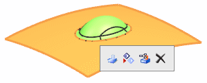
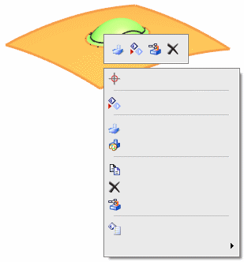

Shortcut toolbar
What is it?
A shortcut toolbar is a toolbar that contains the commands that you are most likely to use for the selected objects. If you select one or more objects of the same type, the shortcut toolbar displays the commands that are specific to the selected object type. If you select multiple objects of different types, the shortcut toolbar displays commands that you can use on all the selected object types.
When no dialog box is open and you select one or more objects in the graphics window, NX displays only the shortcut toolbar.

When no dialog box is open and you right-click one or more selected objects in the graphics window, the Part Navigator, or the Assembly Navigator, NX displays the shortcut toolbar and the shortcut menu.

View shortcut toolbar
The View shortcut toolbar is displayed when you:
-
Click in the background of the graphics window.

-
Hold Ctrl and click an object.

|
Note |
This shortcut toolbar is displayed only if you customize it by adding commands to it. |
You can customize shortcut toolbars using the options on the Shortcut Toolbars tab in the Tools→Customize dialog box.